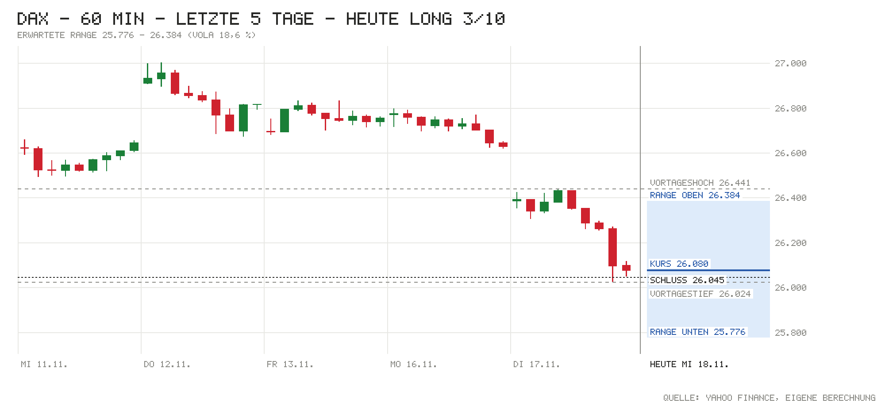

Tagesentscheidung ab 09:06 bis 17:30 Uhr
Nach dem Minus von 2,08 % gestern und rund 3,5 % Abstand zum Rekord drehen die US-Futures nach den starken Nvidia-Zahlen ins Plus (Nasdaq +1,04 %), Bund-Renditen und Ölpreis fallen. Das spricht knapp für eine Erholung bis zum Schluss (eigene Einschätzung). Wichtigstes Gegenargument: Der große Trend ist seit gestern Bear, die Fed-Erhöhung im Dezember ist voll eingepreist, und vor dem Anthropic-Börsengang morgen bleibt der KI-Handel nervös. Darum nur 3/10.
- Kurs um 09:06
- 26.080
- Erwartete Range
- 25.776 – 26.384
- Eingepreist (Tagesoption)
- ±1,17 %
Einschätzung vom Kurs um 09:06 (Median der Indikationen L&S, J.P. Morgan, UBS) bis zum Xetra-Schluss. Range = ±1 σ für die restliche Handelszeit aus der DAX-Tagesoption (ca. 68 %). Keine Anlageberatung.
Chart

Signale
| Signal | Wirkung | Stand und Einordnung |
|---|---|---|
| Vorgaben USA | Rückenwind | Dienstag: S&P 500 −1,03 %, Nasdaq 100 −0,72 %, Dow −1,64 %. Nach den Nvidia-Zahlen (Umsatz 115,8 Mrd. USD, Ausblick 130 Mrd. über Erwartung) Futures jetzt S&P +0,52 %, Nasdaq +1,04 %. |
| Eröffnung & erste Minuten | Neutral | Indikation 26.080 (+0,13 % zum Xetra-Schluss 26.045,37) – kaum Erholungslücke trotz starker Futures. Eröffnung und Hoch/Tief zum Abruf noch n/v. |
| Asien & China | Neutral | Nikkei +0,28 %, Shanghai +0,09 %, CSI 300 +0,18 %, Hang Seng −0,95 %, Kospi rund +1,3 bis +1,7 %. Nvidia-Zahlen ohne breiten Rückenwind. |
| Datenüberraschungen | Gegenwind | US-Einzelhandel gestern 0,2 % vs. Prognose 0,1 %. UK heute: CPI 3,6 % wie erwartet, Erzeugerpreise Input 10,8 % vs. 9,2 % – Inflationsdruck bleibt. |
| Zinserwartung | Gegenwind | Fed 09.12.: 104 % für +25 Bp., Januar 72 % für eine weitere Erhöhung. EZB-Einlagensatz 2,50 %. |
| Renditen | Rückenwind | Bund 10J 3,36 % (−2 Bp.), US 10J 5,10 % (unverändert; +12 Bp. in einer Woche). |
| Kreditstress | Neutral | FRED n/v; Ersatz: HYG −0,13 %, LQD −0,06 % – kein Stress. |
| Öl & Dollar | Rückenwind | Brent 91,69 USD (−1,56 %); EUR/USD 1,0981 (−0,16 %) – schwächerer Euro hilft Exporteuren. |
| Trend | Gegenwind | Knapp über 21-T. (25.997), über 50-T. (25.622) und 200-T.-Schnitt (24.991). Großer Trend aber Bear seit 17.11. – spricht gegen Long. |
| Positionierung | Neutral | COT 10.11.: Hedgefonds im S&P-Future netto −303.060 (+69.258), Asset Manager +914.130. Kein Extrem. |
| Unternehmensnachrichten | Gegenwind | Deutsche Bank nach Datenleck gestern rund −6 %; Siemens Energy, Infineon bleiben im KI-Abverkauf anfällig. |
| Profi-Sicht | Neutral | ING: Renditen trotz harter Fed-Töne leicht tiefer; KI-Narrativ entscheidet, Anthropic-Börsengang als nächster Test. |
| Termine bis 17:30 | Neutral | 11:00 Eurozone-Inflation (Prognose 4,0 %), 15:25 Lagarde. Fed-Protokoll erst 20:00 – großes Ereignisrisiko nach Xetra-Schluss. |
Großer Trend (3-Monats-Momentum)
- Stand
- Bear
- Seit
- 17.11. (7 Wechsel in 3 Monaten)
- Schluss 17.11.
- +0,24 % vs. Zins +0,61 %
- Heute dreht es bei Schluss über
- 26.296 (jetzt −0,95 %)
Mit dem Kurs von jetzt bliebe das Signal Bear; die Schwelle 26.296 liegt aber innerhalb der erwarteten Range – eine Erholung könnte den Trend schon heute zurückdrehen. Bull = Rendite der letzten 3 Monate über dem Geldmarktzins, Bear = darunter. Regel: Rendite der letzten 63 Handelstage (≈ 3 Monate) gegen den EZB-Einlagensatz, jeden Tag zum Schluss neu entschieden, Zeitrahmen Tageskerzen (nach Antonacci 2014, dort monatlich über 12 Monate; täglich entschieden dreht es öfter falsch). Keine Anlageberatung.
Bilanz von gestern
17.11.: Long 2/10 – Richtung falsch, −336 Punkte (Kurs zur Notiz 26.381, Schluss 26.045, Hoch 26.441, Tief 26.024). Range ±217 um den Kurs zur Notiz verfehlt (Bewegung −336); bisher 70 % von 10 Tagen getroffen (Soll ca. 68 %). Gesamt seit Start: 10 Einschätzungen, Richtung richtig 30 %, Summe −809 Punkte bis Schluss (Schnitt −81).
Marktlage
| Markt | Stand | Veränderung |
|---|---|---|
| DAX (Schluss 17.11.) | 26.045,37 | −2,08 % |
| DAX (Eröffnung heute) | n/v | n/v |
| DAX (jetzt, Kurs zur Notiz 09:06) | 26.080 | +0,13 % |
| S&P 500 (Schluss 17.11.) | 7.340,53 | −1,03 % |
| Nasdaq 100 (Schluss 17.11.) | 27.001,78 | −0,72 % |
| Dow Jones (Schluss 17.11.) | 50.759,42 | −1,64 % |
| US-Futures (S&P / Nasdaq) | 7.397,25 / 27.356,00 | +0,52 % / +1,04 % |
| Nikkei 225 | Eröffnung 59.007 → Schluss 59.024 | +0,28 % |
| Shanghai Composite | Eröffnung 3.597 → Schluss 3.588 | +0,09 % |
| CSI 300 | Eröffnung 3.991 → Schluss 3.984 | +0,18 % |
| Hang Seng | Eröffnung 23.429 → aktuell 23.285 | −0,95 % |
| EUR/USD | 1,0981 | −0,16 % |
| Brent (USD/Barrel) | 91,69 | −1,56 % |
| Gold (USD/Unze) | 3.771,10 | −2,41 % |
| VIX (Schluss 17.11.) | 25,46 | +11,13 % |
China: Festland knapp behauptet, Hongkong schwächer – Tech-Werte uneinheitlich, da US-Chipbeschränkungen gegen China die Nvidia-Euphorie dämpfen. Farben bei Brent und VIX nach Wirkung auf Aktien. DAX-Eröffnung lag zum Datenabruf (Yahoo, bis 15 min verzögert) noch nicht vor.
Anleihen & Zinsen
| Markt | Stand | Veränderung |
|---|---|---|
| Bund 2J | 3,10 % | −1 Bp. (vs. Bundesbank 17.11.: 3,11 %) |
| Bund 10J | 3,36 % | −2 Bp. (Vortagesschluss 3,38 %) |
| US-Treasury 2J | 4,81 % (live) | +1 Bp. (offiziell 17.11.: 4,80 %) |
| US-Treasury 10J | 5,10 % (live) | unverändert; 1 Woche (offiziell): +12 Bp. |
| Fed, Sitzung 09.12. | Erhöhung um 25 Bp. erwartet | 104 %; Jan. 72 % |
| EZB-Einlagensatz | 2,50 % | zuletzt +25 Bp. (16.09.) |
| Euro-Hochzins-Aufschlag | n/v (FRED) | n/v |
| US-Hochzins (Ersatz: HYG) | 76,63 USD | −0,13 % (Tag) |
Bund 2J: CNBC-Livekurs gegen Bundesbank-Vortageswert, Quellen nicht ganz vergleichbar.
Termine heute
- 08:00 UK: Verbraucherpreise – Ist 3,6 % vs. Prognose 3,6 %; Kernrate Ist 2,8 % vs. Prognose 2,8 %; Erzeugerpreise Input Ist 10,8 % vs. Prognose 9,2 %
- 08:30 UK: BoE-Gouverneur Bailey spricht (erneut 16:00)
- 11:00 Eurozone: Verbraucherpreise (endgültig) – Prognose 4,0 % · zuvor 3,8 %; Kern Prognose 2,5 % · zuvor 2,5 %
- 14:30 USA: Baubeginne – Prognose 1,250 Mio. · zuvor 1,221 Mio.; Baugenehmigungen – Prognose 1,380 Mio.
- 15:25 EZB-Präsidentin Lagarde spricht
- 16:00 USA: Anhängige Hausverkäufe – Prognose −2,0 % · zuvor −7,3 %
- 16:30 USA: Rohöllagerbestände (EIA) – Prognose +0,4 Mio. Barrel
- nach 17:30 20:00 Fed-Protokoll; Fed-Redner Daly, Barr, Williams, Kashkari. Morgen: Anthropic-Börsengang
Nachrichten zu DAX-Werten
- Deutsche Bank: Nach Medienberichten über mehr als 15 Mio. interne Dokumente (Spiegel, ZDF, NYT, FT; Umgang mit Hochrisikokunden) schloss die Aktie gestern rund 6 % tiefer bei 30,94 Euro. Die Bank spricht von alten, bereits geprüften Vorgängen ohne wesentliche finanzielle Folgen; Finanzminister Klingbeil verlangt Aufklärung. Einschätzung: weitere Schlagzeilen möglich, technische Erholung aber denkbar.
- Siemens Energy / Infineon: Gestern im KI-Abverkauf schwach (Siemens Energy −3,1 % auf 125,00 Euro, Infineon −1,1 %), heute früh laut dpa-AFX leicht erholt. Einschätzung: profitieren am ehesten von den Nvidia-Zahlen, bleiben aber schwankungsanfällig.
- Siemens: Kaufempfehlung von Oddo BHF, Aktie vorbörslich kaum bewegt. Einschätzung: leicht positiv.
- Nvidia (Umfeld): Q3-Umsatz 115,8 Mrd. USD (+103 %), Ausblick 130 Mrd. vs. erwartet 125,3 Mrd.; Aktie nachbörslich rund +4 bis +5 %. Interimschefin Kress schließt eine Rückkehr von Jensen Huang aus. Einschätzung: stützt KI-nahe DAX-Werte (SAP, Infineon, Siemens Energy), der Funke sprang in Asien aber nicht über.
Profi-Sicht & Positionierung
- ING THINK: Bund- und Treasury-Renditen schlossen trotz starker US-Einzelhandelsdaten und harter Fed-Töne leicht tiefer; steigende Renditen setzen ein intaktes KI-Narrativ voraus, der Anthropic-Börsengang und das Fed-Protokoll geben den Ton an (Rates Spark). Am Devisenmarkt dominiert der Dollar; ING sieht für EUR/USD Risiken Richtung 1,0880, der Markt preist weiter rund 75 Bp. Fed-Straffung (FX Daily).
- Positionierung (COT, Stand 10.11.): Hedgefonds im S&P-Future netto −303.060 (+69.258, Short-Abbau), Asset Manager +914.130 (−14.454); Treasuries: Hedgefonds bauen Short aus (−39.017); Euro: Asset Manager netto +165.477 (+20.552). Kein Extrem.
Quellen
- Marktdaten per Skript: Amber Terminal / Yahoo Finance (Kurse, Futures, HYG/LQD), onvista (Indikationen, VDAX), Eurex (DAX-Tagesoption ODAP), Nasdaq (Kalender), CNBC / Bundesbank / US-Treasury (Renditen), CFTC (COT), ING THINK; FRED (Kreditaufschläge) nicht erreichbar
- dpa-AFX: Aktien Frankfurt Ausblick – Kaum verändert nach scharfer Korrektur
- dpa-AFX: Börsentag auf einen Blick – Dax bleibt angeschlagen
- MarketScreener: Deutsche Bank von Datenleck betroffen – Aktie fällt
- CNBC: Stock futures rise as Nvidia gains on earnings beat and solid outlook
- FXStreet: Asian stocks trade mixed after Nvidia earnings, KOSPI leads gains
- Investing.com: Asia tech shares mixed after Nvidia beat as China chip curbs cloud optimism
- ING THINK: Rates Spark – Testing the AI narrative
- ING THINK: FX Daily – Commodity complex is having a moment